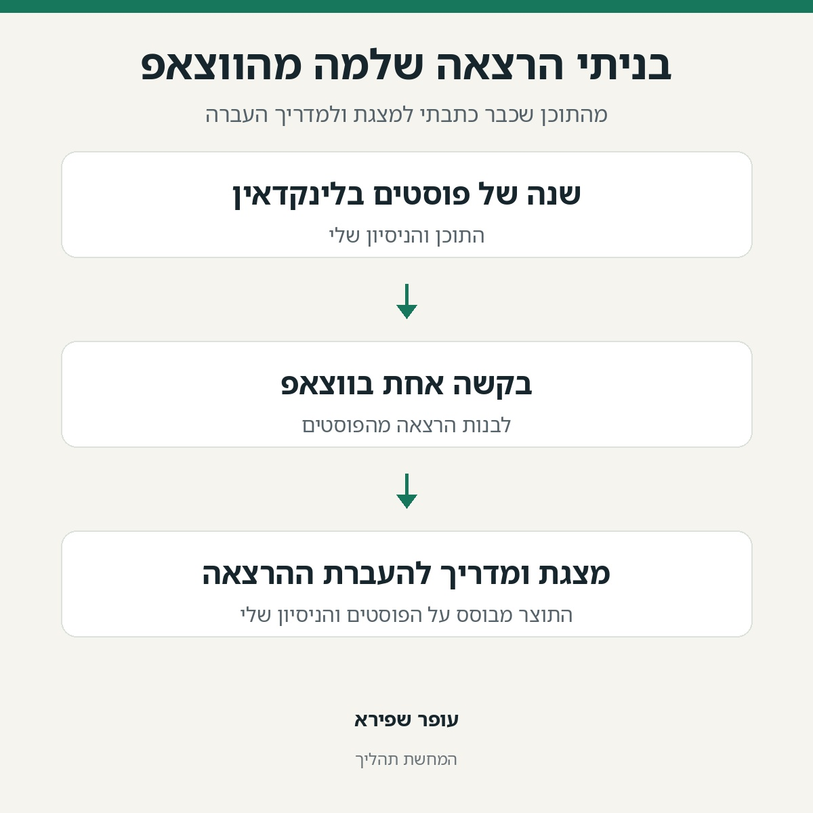

בניתי הרצאה שלמה מהווצאפ.
פורסם במקור ב LinkedIn
בניתי הרצאה שלמה מהווצאפ.
נתתי לסוכן של אינסטינקט קובץ עם שנה של פוסטים שלי בלינקדאין. ביקשתי הרצאה על איך הופכים חברה שלמה ל-AI-native.
קיבלתי מצגת של 15 שקפים ומדריך הכנה בגוגל דוקס, כולל הדמו.
ואז עצרתי אותו: "מה שכתבת זה קשקושים טקטיים".
רציתי תהליכים שמשנים חברה, לא עוד רשימת טיפים.
כארבע דקות אחר כך, שקף הסיום כבר כלל שישה תהליכים מתוך העבודה שכבר שיתפתי.
הוא אפילו תיקן לי את הקרדיט: "עשינו", לא "עשיתי". אחד הכלים נבנה על ידי מישהו מהצוות.
הפוסטים שלי היו חומר הגלם.
ההערה שלי שינתה את ההרצאה.
